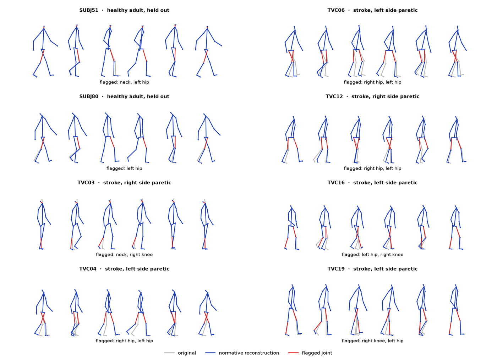

Case study · Nov 2026 – present
MotorPhen
A published Transformer for spotting abnormal joints in walking, rebuilt from the paper alone, trained from scratch, and tested on stroke survivors against simple baselines.
01The question
GenGait (Motta et al., Artificial Intelligence in Medicine) is a Transformer masked autoencoder that learns how healthy people walk, flags joints whose motion does not fit, and reconstructs a "normative twin" of the walk. It was tested on healthy adults imitating abnormal gaits. There was no test on patients, no simple baseline, and no released code, weights or data.
So two questions were open. Does the method work as described when the answer is known, as it is for stroke survivors, where the weak side is recorded? And does it beat rules a clinician could write on a napkin?
02The model
Built from the paper's description, with a written table of every choice the paper leaves open. About 10 million parameters.
03Training
- Fourteen full training runs on an RTX 5090, from 23 minutes to 7.6 hours each, varying the seed, the number of training subjects (25 to 110), the age range of the healthy reference, and the window length (7, 15 and 31 frames).
- The GPU is shared with other lab work, so runs launch detached under a monitor that pauses training when host memory runs low, another job needs the GPU, or the card gets too hot.
- An early trial run froze the laptop on Apple MPS. That led to gradient accumulation and a hard memory cap that stops a process cleanly instead of taking the machine down.
- Every run writes its git commit, a checksum of the input data, library versions and peak GPU memory, so each result can be traced to the exact code and data that made it.
04The test
The evaluation plan was committed to git before the first training run, and the stroke plan before any stroke result was seen. One rule was fixed in advance: a difference only counts if it is larger than the difference between two training seeds.
On 17 held-out healthy adults the model reproduced the paper's result: the reconstruction stayed within the equivalence margin of ±1.5 degrees for all four joint angles, in both seeds. One caveat: under a stricter setting that always corrects two joints, the right knee moved by more than the margin. On 50 stroke survivors (147 walking trials) it was then asked which side is affected.
The Transformer did no better than chance. A one-variable clinical rule, "the side whose knee bends less in swing is the affected one", reached 0.84. In paired comparisons the rule beat seed 1 by 0.30 [0.06, 0.53] (P = 0.014) and seed 2 by 0.22 [-0.01, 0.44] (P = 0.061). This paired test was added after the first results, and the second comparison is reported as it came out, not rounded into a win.

05Could anything rescue it?
Three follow-up experiments, each planned before its results:
- Inference choices. None of the settings the paper leaves open explained the result.
- Age of the healthy reference. A young-only reference made the model flag more healthy adults over 60, as you would expect, without helping on stroke.
- Window length and training size. Longer windows (15 and 31 frames) made no consistent difference. More training subjects helped (mean AUROC 0.41, 0.47 and 0.58 for 25, 50 and 110 subjects), but every interval still included chance.
06What it shows
A model can reproduce a paper's own numbers and still not do the job it is meant for. The cheapest way to find that out is a held-out test with a known answer and a simple baseline beside it, decided before training. The code, results and both trained models are public under the MIT licence, so anyone can check the result or try to beat it.